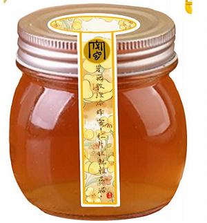
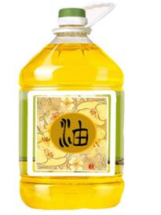
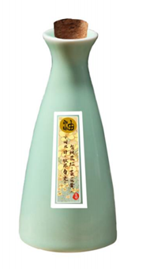
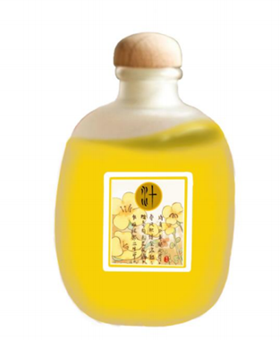

油菜花蜜
20/罐油菜花蜜是一种营养丰富的天然食品，它柔润适口，甜而不腻，无副作用被誉为“人类健 康之友”， 且富含人体所需的多种维生素、有机酸，且不含脂肪。老年人长期食用，可增强体质，补益精神； 幼儿经常服用，有益成长发育，增强体质，油菜花蜜自身具有强大的杀菌力，耐储藏；
了解更多

菜籽油
70/桶菜籽油，俗称菜油，又称为油菜籽油或芸苔油，是从油菜籽中榨取的一种高品质食用油，是我国主要的食用油之一。 它以低胆固醇含量著称，非常适合需要控制胆固醇摄入量的人群食用，为健康加分不少。 此外，菜籽油富含维生素E和不饱和脂肪酸，有助于降低心血管疾病的风险，支持心脏健康。 其清淡的口感和高烟点特性，使得菜籽油在烹饪过程中既能保持食材原味，又能满足煎、炒、炸等多种烹饪需求， 是家庭厨房的理想选择。 无论是日常饮食还是特殊饮食要求，菜籽油都是一个既经济又健康的选项。
了解更多

菜籽油
30/瓶小瓶装菜籽油是现代家庭的理想选择，以其便捷性和节省空间的特点受到欢迎。 采用优质油菜籽精炼而成，这种食用油胆固醇含量低，并富含维生素E和不饱和脂肪酸， 有助于维护心脏健康。小瓶包装不仅方便存放，还易于控制使用量，确保油脂的新鲜度和风味， 非常适合单身人士或小型家庭日常烹饪使用。
了解更多

菜籽花汁
70/桶油菜花汁是一款从新鲜油菜花中提取的天然饮品，它不仅保留了油菜花的独特清香和营养成分， 还富含多种维生素、矿物质以及抗氧化物质。这款汁饮具有清甜适口的特点，不添加任何人工色素和防腐剂。 油菜花汁有助于促进新陈代谢，增强免疫力。
了解更多